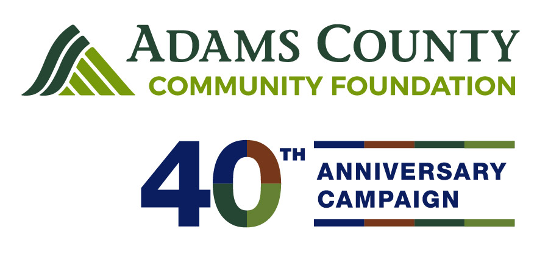
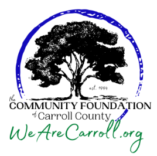

Grantmaking Organizations

Adams County Community FoundationOur mission is to inspire people and communities to build and distribute charitable funds for good, for Adams County, forever.
Instrumentl
Looking for grants for 501(c)(3) nonprofit organizations working in Adams County, Pennsylvania? Find the perfect grant for your nonprofit on Instrumentl.

Community Foundation of Carroll County